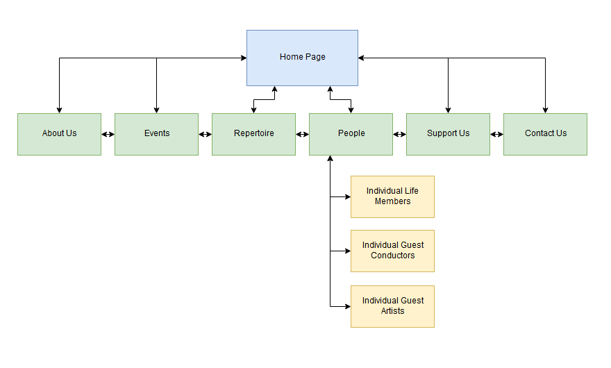

CP1406 - Assignment 2 - Project Plan
Names: Thomas Napier, Sam Sheppard, Aaron Lanskey
Mission Statement
The goal for the new Great Barrier Reef Orchestra website is to increase the amount of members seen at the organisation by 20%. The new site is needed as a new way of attracting people to participate in the Orchestra. The creation of a website will attract new groups of people to the organisation, benefitting the client and ultimately increasing the amount of people in the Orchestra.
Success Evaluation
The new website will be evaluated based on whether the organisation experiences and increase in member count by 20% or not. If this number is reached, the website will be categorised a success, if not, a re-design or re-evaluation will be required.
Target Audience
The Barrier Reef Orchestra usually attracts the attention of all people from ages 12-75 with some musical interest. However, the realism of being able to please everyone is unrealistic. Therefore, the realistic chosen target audience will be a younger age demographic of 12-25.
The new website will be intentionally tailored towards the chosen target audience by including several design elements to intrigue them. Elements such as a modern, sleek design interface, intuitive navigation, a plethora of interactivity and an interesting mix of bright colours will appeal more to the younger generations and peak their interest in the organisation. In comparison, if the site was built for the original target audience, it would include a much more corporate color palette and have less interactivity as to not confuse the older demographic.
Content
Home Page
- Navigation Bar
- Header (With Logo)
- Goal (Link to the Member Registration PDF)
- Image Carousel
- Short Description
- Next Concert/Event
- Notices
- FaceBook Feed
- Contact Information
- Footer
About Us
- Navigation Bar
- Header (With Logo)
- Goal
- Information about The Barrier Reef Orchestra
- Rehearsal Schedule
- Footer
Events
- Navigation Bar
- Header (With Logo)
- Goal
- Upcoming events showcase
- Events Info
- Events Pictures
- Footer
Repertoire
- Navigation Bar
- Header (With Logo)
- Goal
- Repertoire Information (sorted by year)
- Footer
People
- Navigation Bar
- Header (With Logo)
- Goal
- Committee
- Life Members
- Guest Conductors
- Guest Artists
- Footer
Individual Life Members
- Navigation Bar
- Header (With Logo)
- Goal
- Image
- Information About Them
- Footer
Individual Guest Conductors
- Navigation Bar
- Header (With Logo)
- Goal
- Image
- Information About Them
- Footer
Individual Guest Artists
- Navigation Bar
- Header (With Logo)
- Goal
- Image
- Information About Them
- Footer
Support Us
- Navigation Bar
- Header (With Logo)
- Goal
- Benefactor Information
- Benefactor Form
- Member Registration
- Sponsor Details
- Donation Information
- Footer
Contact Us
- Navigation Bar
- Header (With Logo)
- Goal
- Contact Information
- Message Us form
- Footer
Site Flowchart

GitHub Repository
https://github.com/thomasnapier/Assignment2